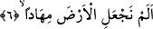

dirilmenin imkansız olduğuna inandıklarından; bâzılarının, bunu kabul edip ilâhlarının
şefâatçi olacağını söylediklerinden; bâzılarının ise bu konuda şüphe duyduklarından söz
etmiş, “ayrılığa düşme”nin bu anlama geldiğini ifâde etmiştik. Bâzı âlimler ise “ayrılığa
düşme” kavramını, kâfirlerin top yekün Peygamber Efendimiz’e “karşı durmaları”
şeklinde anlamışlardır. Onlara göre “ayrılığa düşmek”, iki grubun birbirinin görüşünü
kabul etmemesi değil, bir çok kişiden aynı hareket ve fiilin zuhûr etmesi demektir.
Çünkü, her ne kadar topluca tehdid ve redde müstahak olsalar da, bunlardan her birinin,
bu tehdid ve redde müstahak oluşları, bir grubun diğer grup gibi düşünmüyor
olmasından değildir. Çünkü “ayrılığa düşen” bu iki grubun hiçbiri de hak üzere değildir
ki, bunlardan birisine karşı gelen ve onun gibi düşünmeyen grub, bu yüzden hesaba
çekilmeye müstahak olsun. Bu bakımdan bahsedilen kimselerin tehdid ve redde
uğramaları, özellikle Peygamber Efendimiz (s.a.)’e muhâlefet etmelerinden dolayıdır.
“Kellâ/hayır” lafzı, onların hem kendi aralarında bu konuyu “soruşturmalarını”, hem
de -her iki anlamıyla- “ayrılığa düşmelerini” red anlamı ifâde etmektedir. Aynı âyetteki
“seya’lemûn/anlayacaklar” ifâdesi, başlangıç cümlesi mâhiyetinde olup, tehdid anlamı
ihtivâ etmekte, öte yandan kendilerine yöneltilen red ve engel olmanın sebebini haber
vermektedir. Fiilin başındaki “sin” harfi yakın gelecek zamanı ifâde etmenin yanısıra,
aynı zamanda mânâya pekiştirme anlamı katar. “Anlayacaklar” fiilinin mef’ûlü, ifâdenin
akışından anlaşılan, “onların soruşturdukları olayın meydana geleceği ve hakkında
görüş ayrılığına düştükleri konunun mutlaka olacağı” şeklindeki anlam değildir. Bilakis
o fiilin asıl mef’ulü, onların karşılaşacak oldukları çeşitli belâlar ve cezâlardır. Onların
karşılaşacakları bu belâ ve cezâlar, “soruşturma ve ayrılığa düşme” fiillerinin ardından
geldiği için “anlama, bilme” fiili ile ifâde olunmuştur. Buna göre âyet-i kerîmeye şöyle
mânâ vermek mümkündür: “Onlar içinde bulundukları bu durumdan vazgeçsinler. Çünkü
onlar çok yakında başlarına azap ve cezâ geldiği zaman işin iç yüzünü bilecekler.”
6. Biz yeryüzünü bir döşek yapmadık mı?
“Biz yeryüzünü bir döşek yapmadık mı?” Bu cümle, yukardaki haberin ve hakkında
soruşturma yapılan durumun gerçek olduğunu belirtmek için sevkedilmiş bir başlangıç
cümlesidir. Bahsedilen olayın gerçek olduğu, yukarda zikredilen tehdîd ve reddin
ardından bunun gerçekliğini ifâde eden bâzı delillerin sıralanması ile vurgulanmaktadır.
Buradan hareketle hakkında soruşturulma yapılan şey, -bâzılarının dediği gibi Kur’an
veya Efendimiz (a.s.)’ın peygamberliği değil- “öldükten sonra dirilme”dir.
Âyetin başında yer alan hemze, aslında soru biçiminde olmakla birlikte soru için
değil, bir gerçeği ifâde etmek/takrir içindir.
“Mihâd” sergi, döşek anlamındadır. Bâzı âyetlerde “mihâd” yerine yine aynı anlamda